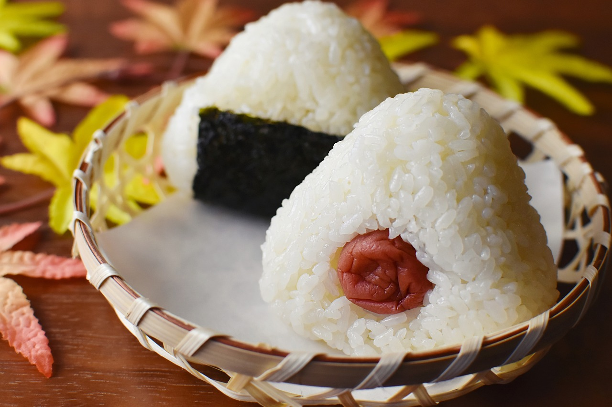

Onigiri Recipe
Onigiri, also known as Japanese rice balls, are a beloved staple of Japanese cuisine cherished for their simplicity, versatility, and comforting taste. These handheld snacks consist of rice formed into triangular or cylindrical shapes and often filled or seasoned with various ingredients. Traditionally, onigiri are made by shaping warm, freshly cooked rice with moistened hands, then wrapping them in a thin layer of nori (seaweed) to hold everything together. The fillings can vary widely, ranging from classic options like salted salmon (shiozake) and pickled plum (umeboshi) to more contemporary choices such as tuna mayo, grilled chicken, or even kimchi. With their convenient size and portability, onigiri are not only a popular snack for on-the-go eating but also a common item in bento lunch boxes and picnics.
Beyond their practicality, onigiri hold a special place in Japanese culture, evoking feelings of nostalgia and home-cooked comfort. They are often associated with childhood memories, school lunches, and family gatherings. Making onigiri can be a cherished tradition passed down through generations, with each family adding its own unique touch to the recipe. Additionally, onigiri are sometimes crafted into decorative shapes or adorned with cute faces using nori cutouts, adding an element of fun and creativity to the eating experience. Whether enjoyed as a quick snack, a satisfying meal, or a nostalgic taste of home, onigiri continue to captivate both Japanese locals and international food enthusiasts alike with their simple yet irresistible charm.
Ingredients and Tools
- Japanese short-grain rice
- Nori
- Fillings
- Salted salmon
- Pickled plum
- Grilled or teriyaki chicken
- Tuna mayo
- Umeboshi paste
- Cooked vegetables
- Tempura scraps
- Kimchi
- Seasonings
- Salt
- Soy sauce
- Sesame seeds
- Furikake
- Wasabi
- Tools
- Onigiri mold
- Plastic wrap
- Rice paddle or spoon
- Bowl of water
- Kitchen shears
Instructions
- Prepare the Rice
- Rinse the Japanese short-grain rice in a fine-mesh strainer under cold water until the water runs clear.
- Cook the rice according to package instructions or using a rice cooker. For best results, use a slightly firm texture by using slightly less water than usual.
- Once cooked, let the rice cool slightly until it's cool enough to handle but still warm.
- Prepare the Fillings
- If using any fillings that need to be cooked (e.g., chicken, vegetables), prepare them beforehand and let them cool to room temperature.
- For fillings like salted salmon or pickled plum, ensure they are ready to be added to the onigiri.
- Season the Rice
- While the rice is still warm, lightly season it with salt, soy sauce, sesame seeds, furikake, or any other desired seasonings. Mix gently to distribute the seasonings evenly.
- Prepare the Nori
- If using nori sheets, cut them into thin strips that are long enough to wrap around the onigiri.
- Moisten Your Hands
- To prevent the rice from sticking to your hands, moisten them lightly with water.
- Shape the Onigiri
- Take a small handful of rice (about the size of a tennis ball) and place it in the palm of your hand.
- Flatten the rice slightly and make an indentation in the center for the filling.
- Add a small amount of filling to the center of the rice.
- Form the Onigiri
- Fold the rice over the filling to enclose it, shaping the rice into a triangular or cylindrical shape.
- Use your hands to press and mold the rice firmly into shape, ensuring there are no gaps or loose grains.
- Wrap with Nori
- If using nori, wrap a strip around the middle or bottom of the onigiri, securing it in place.
- Repeat
- Continue shaping and filling the remaining rice until you have made all the desired onigiri.
- Serve or Store
- Onigiri can be enjoyed immediately or wrapped individually in plastic wrap for later consumption.
- If storing for later, keep them at room temperature for a few hours or refrigerate for longer storage. Bring them to room temperature before serving for the best taste and texture.
Enjoy your homemade onigiri as a delicious snack, lunch, or addition to your bento box!